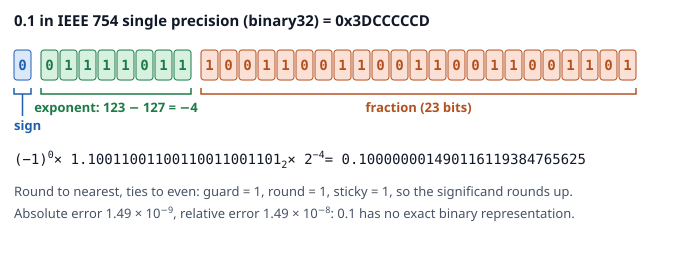

RISC-V Floating Point Simulator
Chapter 3

- Any number converted bit by bit to double, single, half, bfloat16 and the two 8 bit OCP formats, with the stored value, the error in ULPs and the guard, round and sticky bits.
- fadd, fmul, fdiv, fsqrt and fmadd shown as the hardware steps, under the five RISC-V rounding modes and stochastic rounding, with the fflags exceptions.
- Integer multiplication and division in the textbook step tables, fixed point Qm.n formats, experiments on accumulated error and seeded exercise lists with automatic grading.
Every result is first computed exactly with BigInt rationalsOpen simulatorSource code →